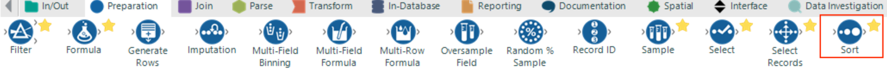

.png)
Sometimes we will want to order the records in our data set in ascending or descending order according to a specific field or by multiple fields for example in chronological order. This is useful if we want to take only a certain number of records from the data based on certain criteria or we want to view the data in a certain order.
Alteryx provides us with the Sort Tool for ordering our data and can be found in the Preparation tab of the tool pallet. Let’s see how we use the Sort Tool by ordering the data in our sales report workflow
In our workflow as a final step before we output the data to file, let’s sort to make the data easier to understand. We are going to sort the records by Genre and then by OrderDate so that we can easily see how the sales for each genre progressed over time.
Step 1:
First let’s drag the Sort Tool into the workspace, connecting the input to the output of the Summarize tool.

Step 2:
Next select the Sort Tool and move to the configuration window. Set the Name in the first row of the fields list to “Genre” and the Order to “Ascending”. This will ensure that each record will be ordered alphabetically according to the Genre field. Then set the second row of the fields list to have Name “OrderDate” and Order to be again “Ascending”. This means that once sorted alphabetically based on Genre, each record will then be sorted chronologically.
Step 3:
Finally run the workflow and check the output. You should see that all records appear in order of Genre and then by OrderDate
Now we have completed all the processing of our data, it’s time to output the data to file. Let’s move onto exporting the data to a CSV file using the Export Tool.